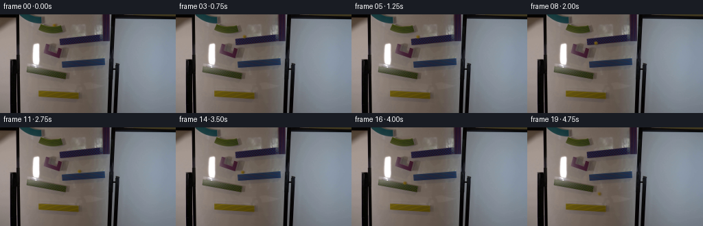
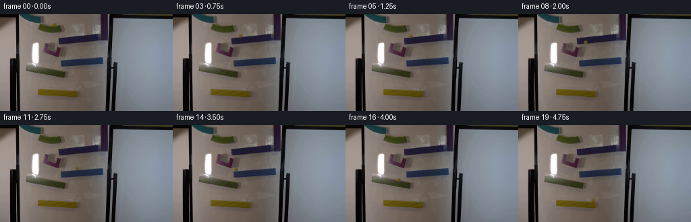
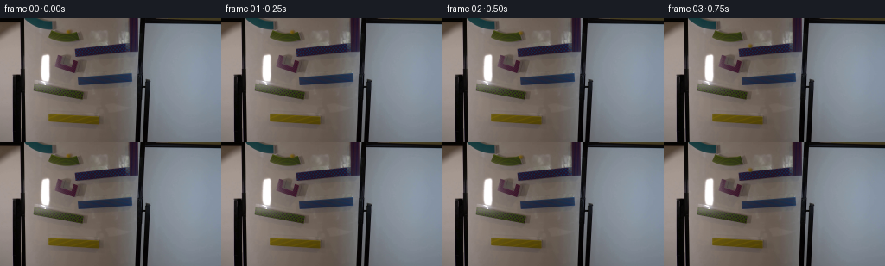

CODING AGENTS AS PIXEL WORLD MODELS
traex/GPT-6.1-Sol · 0105
点击播放 · 原生 RGB 像素
逐轮保存的候选
回放视频、检查图与代码变化。
每份候选均可单独播放。实际图片检查记录在下方工具轨迹中。
候选 01播放与检查图
点击播放 · 原生 RGB 像素

展开代码变化
--- 上一保存版本
+++ 本次保存版本
@@ -0,0 +1,164 @@
+from pathlib import Path
+import math
+import numpy as np
+from PIL import Image
+from scipy.ndimage import gaussian_filter, map_coordinates
+import artifact_io
+
+ROOT = Path(__file__).resolve().parent
+
+
+def generate():
+ original = np.array(Image.open(ROOT / 'first_frame.png').convert('RGB'))
+ bg = original.astype(np.float64).copy()
+ # Restore the few board/track pixels hidden by the initial glass sphere.
+ for y in range(11, 19):
+ for x in range(74, 85):
+ left = original[y, 73:75].mean(axis=0)
+ right = original[y, 84:86].mean(axis=0)
+ u = (x - 73.5) / 11.
+ est = left*(1-u) + right*u
+ d = ((x-79.1)/4.7)**2 + ((y-15.2)/3.5)**2
+ a = np.clip((1.25-d)*3, 0, 1)
+ bg[y,x] = bg[y,x]*(1-a) + est*a
+
+ # Motion is continuous in seconds, with gravity between the troughs.
+ gravity = 1000.
+ rolling = 5/7
+ pieces = []
+ time = 0.
+ def add(duration, fun, label):
+ nonlocal time
+ pieces.append((time,time+duration,fun,label))
+ time += duration
+ def flight(p, v, surface, label):
+ # surface(x) = intercept + slope*x; intersection is exact.
+ b, m = surface
+ aa=.5*gravity
+ bb=v[1]-m*v[0]
+ cc=p[1]-b-m*p[0]
+ dur=(-bb+math.sqrt(bb*bb-4*aa*cc))/(2*aa)
+ add(dur, lambda t,p=p,v=v: np.array([p[0]+v[0]*t,p[1]+v[1]*t+.5*gravity*t*t]),label)
+ q=np.array([p[0]+v[0]*dur,p[1]+v[1]*dur+.5*gravity*dur*dur])
+ return q,np.array([v[0],v[1]+gravity*dur])
+ def ramp(p, vx, slope, endx, label):
+ acc=rolling*gravity*slope/(1+slope*slope)
+ roots=np.roots([.5*acc,vx,p[0]-endx])
+ dur=max(float(r.real) for r in roots if abs(r.imag)<1e-7 and r.real>0)
+ def f(t,p=p,vx=vx,acc=acc,slope=slope):
+ dx=vx*t+.5*acc*t*t
+ return p+np.array([dx,slope*dx])
+ add(dur,f,label)
+ return f(dur),np.array([vx+acc*dur,(vx+acc*dur)*slope])
+
+ p=np.array([79.1,15.45])
+ p,v=ramp(p,0.,.128,91.,'upper green')
+ # The board-side lip of the long blue trough slopes to the left.
+ p,v=flight(p,v,(42.161,-.103),'drop to blue')
+ p,v=ramp(p,v[0]*.36,-.103,87.4,'first blue')
+ # Entry into the curved red reversing chute.
+ p,v=flight(p,v,(22.0,.4),'drop into red')
+
+ # Arc-length dynamics in the rounded U, redirecting the falling marble.
+ # The right-hand end rises, so the outgoing velocity points up and right.
+ start=p.copy()
+ controls=[start,np.array([80.5,54.3]),np.array([83.0,56.0]),np.array([85.0,52.9]),np.array([87.5,47.4])]
+ dense=[]
+ # Catmull-Rom through the inner surface of the moulded turning piece.
+ cs=[controls[0]-(controls[1]-controls[0])]+controls+[controls[-1]+(controls[-1]-controls[-2])]
+ for k in range(1,len(cs)-2):
+ a,b,c,d=cs[k-1:k+3]
+ for u in np.linspace(0,1,90,endpoint=False):
+ dense.append(.5*((2*b)+(-a+c)*u+(2*a-5*b+4*c-d)*u*u+(-a+3*b-3*c+d)*u*u*u))
+ dense.append(controls[-1])
+ dense=np.array(dense)
+ ds=np.linalg.norm(np.diff(dense,axis=0),axis=1)
+ entry_speed=max(135.,np.linalg.norm(v)*.88)
+ speed=np.sqrt(np.maximum(1700.,entry_speed**2+2*gravity*(dense[:,1]-dense[0,1])))
+ ts=np.r_[0,np.cumsum(2*ds/(speed[:-1]+speed[1:]))]
+ dur=ts[-1]
+ def curved(t):
+ return np.array([np.interp(t,ts,dense[:,0]),np.interp(t,ts,dense[:,1])])
+ add(dur,curved,'red turn')
+ p=dense[-1]
+ tangent=dense[-1]-dense[-2]
+ v=tangent/np.linalg.norm(tangent)*speed[-1]
+ p,v=flight(p,v,(72.112,-.074),'arc to lower blue')
+ p,v=ramp(p,v[0]*.45,-.074,88.0,'second blue')
+ # A dissipative landing in the green trough below.
+ p,v=flight(p,v,(69.15,.15),'drop to lower green')
+ p,v=ramp(p,v[0]*.30,.15,95.5,'lower green')
+ p,v=flight(p,v,(106.31,.045),'drop to yellow')
+ # The short almost-level yellow trough carries the marble off its end.
+ if p[0]<113.8:
+ p,v=ramp(p,v[0]*.70,.045,113.8,'yellow')
+ else:
+ pass
+ add(5.,lambda t,p=p.copy(),v=v.copy():p+np.array([v[0]*t,v[1]*t+.5*gravity*t*t]),'final fall')
+
+ def position(t):
+ for a,b,f,label in pieces:
+ if t <= b+1e-8:
+ return f(max(0,t-a)),label
+ return np.array([200.,200.]),'out'
+
+ # A small glass ball, reconstructed from its RGB appearance in frame 0.
+ # Recover a softly antialiased sprite rather than introducing a stylized ball.
+ xx,yy=np.meshgrid(np.arange(73,86),np.arange(10,22))
+ rr=np.sqrt(((xx-79.1)/2.65)**2+((yy-15.45)/2.35)**2)
+ alpha=np.clip((1.22-rr)/.43,0,1)
+ alpha=gaussian_filter(alpha,.32)
+ patch=original[10:22,73:86].astype(float)
+ back=bg[10:22,73:86]
+ # Invert foreground compositing, keeping the amber's soft optical edge.
+ color=np.zeros_like(patch)
+ for ch in range(3):
+ color[:,:,ch]=(patch[:,:,ch]-back[:,:,ch]*(1-alpha))/np.maximum(alpha,.04)
+ color=np.clip(color,0,255)
+ # Uncertain boundary colors are blended with the true measured amber core.
+ default=np.stack([112-18*np.clip((xx-79.1)/3,-1,1),
+ 87-13*np.clip((xx-79.1)/3,-1,1),
+ 24+8*np.clip((xx-79.1)/3,-1,1)],axis=-1)
+ trusted=np.clip((alpha-.13)/.3,0,1)[:,:,None]
+ color=trusted*color+(1-trusted)*default
+ premult=color*alpha[:,:,None]
+
+ def paint(center, exposure=0.):
+ cx,cy=center
+ img=bg.copy()
+ if cx<-8 or cx>264 or cy<-8 or cy>152:
+ return img
+ x0=max(0,int(math.floor(cx))-8);x1=min(256,int(math.ceil(cx))+9)
+ y0=max(0,int(math.floor(cy))-8);y1=min(144,int(math.ceil(cy))+9)
+ gx,gy=np.meshgrid(np.arange(x0,x1),np.arange(y0,y1))
+ # Very faint cast shadow against the white board, fixed light direction.
+ shadow=np.exp(-.5*(((gx-cx-1.15)/2.0)**2+((gy-cy-.85)/1.35)**2))*.105
+ img[y0:y1,x0:x1]*=(1-shadow[:,:,None])
+ tx=gx-cx+79.1-73
+ ty=gy-cy+15.45-10
+ aa=map_coordinates(alpha,[ty,tx],order=1,mode='constant',cval=0)
+ pp=np.stack([map_coordinates(premult[:,:,c],[ty,tx],order=1,mode='constant',cval=0) for c in range(3)],axis=-1)
+ # Glass tint is stable; illumination follows the slight board gradient.
+ illumination=np.clip(1.+(79.1-cx)*.001, .94,1.07)
+ img[y0:y1,x0:x1]=img[y0:y1,x0:x1]*(1-aa[:,:,None])+pp*illumination
+ return img
+
+ frames=[original]
+ records=[]
+ for i in range(1,20):
+ t=i/4
+ p,label=position(t)
+ # Short shutter exposure; the locked-off apparatus stays pixel-static.
+ subframes=[]
+ for off in [-.006,0,.006]:
+ q,_=position(t+off)
+ subframes.append(paint(q))
+ frame=np.clip(np.mean(subframes,axis=0),0,255).round().astype(np.uint8)
+ frames.append(frame)
+ records.append((i,round(t,2),label,*(round(float(q),2) for q in p)))
+ (ROOT/'.tmp'/'trajectory.txt').write_text('\n'.join(map(str,records))+'\n\n'+ '\n'.join(f'{a:.3f}--{b:.3f}: {l}' for a,b,f,l in pieces))
+ return np.array(frames,dtype=np.uint8)
+
+if __name__=='__main__':
+ frames=generate()
+ artifact_io.save(frames,ROOT)
候选 02播放与检查图
点击播放 · 原生 RGB 像素


展开代码变化
--- 上一保存版本
+++ 本次保存版本
@@ -84,7 +84,7 @@
tangent=dense[-1]-dense[-2]
v=tangent/np.linalg.norm(tangent)*speed[-1]
p,v=flight(p,v,(72.112,-.074),'arc to lower blue')
- p,v=ramp(p,v[0]*.45,-.074,88.0,'second blue')
+ p,v=ramp(p,v[0]*.40,-.074,88.0,'second blue')
# A dissipative landing in the green trough below.
p,v=flight(p,v,(69.15,.15),'drop to lower green')
p,v=ramp(p,v[0]*.30,.15,95.5,'lower green')
可观测工具轨迹
实际执行的命令与返回图片。
命令 1exit 0
/bin/bash -lc 'ls -la && cat prompt.txt && cat GENERATION_RULES.md'
命令 2exit 0
/bin/bash -lc "cat artifact_io.py && python - <<'PY'
from PIL import Image
import numpy as np
im=np.array(Image.open('first_frame.png'))
print(im.shape)
# most common colors
from collections import Counter
print(Counter(map(tuple,im.reshape(-1,3))).most_common(25))
# coarse brightness + chromatic ascii 128x72
im=np.array(Image.open('first_frame.png').resize((128,72)))
for row in im:
s=''
for r,g,b in row.astype(int):
if r>145 and g>110 and b<110:s+='Y'
elif r>g*1.25 and r>b*1.2:s+='R'
elif b>r*1.2 and b>g*1.1:s+='B'
elif g>r*1.15 and g>b*1.15:s+='G'
else:s+=' .:-=+*#%@'[min(9,int((255-(r+g+b)/3)/256*10))]
print(s)
PY"命令 3exit 0
/bin/bash -lc "python - <<'PY'
from PIL import Image
import numpy as np
im=np.array(Image.open('first_frame.png')).astype(float)
# significant yellow candidates
s=(im[:,:,0]+im[:,:,1])/2-im[:,:,2]
inds=np.dstack(np.unravel_index(np.argsort(s.ravel())[-80:][::-1],s.shape))[0]
print('yellow pixels:',[(int(x),int(y),im[y,x].astype(int).tolist(),round(s[y,x],1)) for y,x in inds[::3]])
# all saturated classification in board area
for y in range(5,132):
out=''
for x in range(28,158):
r,g,b=im[y,x]; v=max(r,g,b)-min(r,g,b)
if v<15:c='.' if r+g+b>570 else ':' if r+g+b>330 else '#' if r+g+b>170 else '@'
elif r>g and r>b:
c='Y' if g-b>r-g else 'r' if v<40 else 'R'
elif g>r and g>b:c='g' if v<40 else 'G'
else:c='b' if v<40 else 'B'
out+=c
print(f'{y:03} '+out)
PY"命令 4exit 0
/bin/bash -lc "python - <<'PY'
import numpy as np
from PIL import Image
im=np.array(Image.open('first_frame.png'))
for area in [(45,9,98,31),(58,40,99,68),(20,0,65,18),(36,74,99,98)]:
x0,y0,x1,y1=area
a=im[y0:y1,x0:x1].astype(int)
print('\\nAREA',area)
# quantize brightness restricted symbols, colored if ratio
for y,row in enumerate(a,y0):
s=''
for r,g,b in row:
if (r+g)/2-b>50: c='Y'
elif g-r>18 and g-b>12: c='G'
elif r-g>23 and r-b>25: c='R'
elif b-r>18 and b-g>8: c='B'
elif (r+g+b)/3<30:c='@'
elif (r+g+b)/3<55:c='#'
elif (r+g+b)/3<80:c='*'
elif (r+g+b)/3<105:c='+'
elif (r+g+b)/3<135:c='='
elif (r+g+b)/3<170:c='-'
elif (r+g+b)/3<210:c='.'
else:c=' '
s+=c
print(f'{y:03} {s}')
print('samples')
for y in range(y0,y1,3):
print(y,[(x, im[y,x].tolist()) for x in range(x0,x1,5)])
PY"命令 5exit 0
/bin/bash -lc "python - <<'PY'
import numpy as np
from PIL import Image
im=np.array(Image.open('first_frame.png'))
for y in range(10,24):
print(y,' '.join(f'{x}:{r:03},{g:03},{b:03}' for x in range(73,86) for r,g,b in [im[y,x]]))
# transition boundaries blue top lower: print samples top and bottom of dark-blue areas per x
for label,(x0,x1,y0,y1) in [('blue1',(80,159,27,48)),('blue2',(84,151,60,84)),('green',(37,100,72,99)),('yellow',(50,114,104,129))]:
print(label)
for x in range(x0,x1,3):
a=im[y0:y1,x].astype(int);r,g,b=a.T
m=(b-r>8)&(b-g>4) if 'blue' in label else (g-b>15)&(g-r>-5) if label=='green' else (r-b>30)&(g-b>25)
yy=np.where(m)[0]+y0
print(x, yy.tolist())
PY"命令 6exit 0
/bin/bash -lc "python - <<'PY'
from PIL import Image
import numpy as np
im=np.array(Image.open('first_frame.png')).astype(float)
# ascii quantized RGB to aid geometry without images
for crop in [(60,39,94,66),(36,73,100,95),(54,10,95,29),(83,27,154,47)]:
x0,y0,x1,y1=crop
print('\\n',crop)
for y in range(y0,y1):
vals=[]
for x in range(x0,x1):
r,g,b=im[y,x]
if r>g+16 and r>b+9 and r<105:c='R'
elif g>r+3 and g>b+12:c='G'
elif b>r+8 and b>g+3:c='B'
elif max(r,g,b)<75:c='#'
elif max(r,g,b)<110:c='+'
elif max(r,g,b)<140:c='-'
elif max(r,g,b)<200:c='.'
else:c=' '
vals.append(c)
print(f'{y} '+''.join(vals))
PY"命令 7exit 0
/bin/bash -lc "cat > generate.py <<'PY'
from pathlib import Path
import math
import numpy as np
from PIL import Image
from scipy.ndimage import gaussian_filter, map_coordinates
import artifact_io
ROOT = Path(__file__).resolve().parent
def generate():
original = np.array(Image.open(ROOT / 'first_frame.png').convert('RGB'))
bg = original.astype(np.float64).copy()
# Restore the few board/track pixels hidden by the initial glass sphere.
for y in range(11, 19):
for x in range(74, 85):
left = original[y, 73:75].mean(axis=0)
right = original[y, 84:86].mean(axis=0)
u = (x - 73.5) / 11.
est = left*(1-u) + right*u
d = ((x-79.1)/4.7)**2 + ((y-15.2)/3.5)**2
a = np.clip((1.25-d)*3, 0, 1)
bg[y,x] = bg[y,x]*(1-a) + est*a
# Motion is continuous in seconds, with gravity between the troughs.
gravity = 1000.
rolling = 5/7
pieces = []
time = 0.
def add(duration, fun, label):
nonlocal time
pieces.append((time,time+duration,fun,label))
time += duration
def flight(p, v, surface, label):
# surface(x) = intercept + slope*x; intersection is exact.
b, m = surface
aa=.5*gravity
bb=v[1]-m*v[0]
cc=p[1]-b-m*p[0]
dur=(-bb+math.sqrt(bb*bb-4*aa*cc))/(2*aa)
add(dur, lambda t,p=p,v=v: np.array([p[0]+v[0]*t,p[1]+v[1]*t+.5*gravity*t*t]),label)
q=np.array([p[0]+v[0]*dur,p[1]+v[1]*dur+.5*gravity*dur*dur])
return q,np.array([v[0],v[1]+gravity*dur])
def ramp(p, vx, slope, endx, label):
acc=rolling*gravity*slope/(1+slope*slope)
roots=np.roots([.5*acc,vx,p[0]-endx])
dur=max(float(r.real) for r in roots if abs(r.imag)<1e-7 and r.real>0)
def f(t,p=p,vx=vx,acc=acc,slope=slope):
dx=vx*t+.5*acc*t*t
return p+np.array([dx,slope*dx])
add(dur,f,label)
return f(dur),np.array([vx+acc*dur,(vx+acc*dur)*slope])
p=np.array([79.1,15.45])
p,v=ramp(p,0.,.128,91.,'upper green')
# The board-side lip of the long blue trough slopes to the left.
p,v=flight(p,v,(42.161,-.103),'drop to blue')
p,v=ramp(p,v[0]*.36,-.103,87.4,'first blue')
# Entry into the curved red reversing chute.
p,v=flight(p,v,(22.0,.4),'drop into red')
# Arc-length dynamics in the rounded U, redirecting the falling marble.
# The right-hand end rises, so the outgoing velocity points up and right.
start=p.copy()
controls=[start,np.array([80.5,54.3]),np.array([83.0,56.0]),np.array([85.0,52.9]),np.array([87.5,47.4])]
dense=[]
# Catmull-Rom through the inner surface of the moulded turning piece.
cs=[controls[0]-(controls[1]-controls[0])]+controls+[controls[-1]+(controls[-1]-controls[-2])]
for k in range(1,len(cs)-2):
a,b,c,d=cs[k-1:k+3]
for u in np.linspace(0,1,90,endpoint=False):
dense.append(.5*((2*b)+(-a+c)*u+(2*a-5*b+4*c-d)*u*u+(-a+3*b-3*c+d)*u*u*u))
dense.append(controls[-1])
dense=np.array(dense)
ds=np.linalg.norm(np.diff(dense,axis=0),axis=1)
entry_speed=max(135.,np.linalg.norm(v)*.88)
speed=np.sqrt(np.maximum(1700.,entry_speed**2+2*gravity*(dense[:,1]-dense[0,1])))
ts=np.r_[0,np.cumsum(2*ds/(speed[:-1]+speed[1:]))]
dur=ts[-1]
def curved(t):
return np.array([np.interp(t,ts,dense[:,0]),np.interp(t,ts,dense[:,1])])
add(dur,curved,'red turn')
p=dense[-1]
tangent=dense[-1]-dense[-2]
v=tangent/np.linalg.norm(tangent)*speed[-1]
p,v=flight(p,v,(72.112,-.074),'arc to lower blue')
p,v=ramp(p,v[0]*.45,-.074,88.0,'second blue')
# A dissipative landing in the green trough below.
p,v=flight(p,v,(69.15,.15),'drop to lower green')
p,v=ramp(p,v[0]*.30,.15,95.5,'lower green')
p,v=flight(p,v,(106.31,.045),'drop to yellow')
# The short almost-level yellow trough carries the marble off its end.
if p[0]<113.8:
p,v=ramp(p,v[0]*.70,.045,113.8,'yellow')
else:
pass
add(5.,lambda t,p=p.copy(),v=v.copy():p+np.array([v[0]*t,v[1]*t+.5*gravity*t*t]),'final fall')
def position(t):
for a,b,f,label in pieces:
if t <= b+1e-8:
return f(max(0,t-a)),label
return np.array([200.,200.]),'out'
# A small glass ball, reconstructed from its RGB appearance in frame 0.
# Recover a softly antialiased sprite rather than introducing a stylized ball.
xx,yy=np.meshgrid(np.arange(73,86),np.arange(10,22))
rr=np.sqrt(((xx-79.1)/2.65)**2+((yy-15.45)/2.35)**2)
alpha=np.clip((1.22-rr)/.43,0,1)
alpha=gaussian_filter(alpha,.32)
patch=original[10:22,73:86].astype(float)
back=bg[10:22,73:86]
# Invert foreground compositing, keeping the amber's soft optical edge.
color=np.zeros_like(patch)
for ch in range(3):
color[:,:,ch]=(patch[:,:,ch]-back[:,:,ch]*(1-alpha))/np.maximum(alpha,.04)
color=np.clip(color,0,255)
# Uncertain boundary colors are blended with the true measured amber core.
default=np.stack([112-18*np.clip((xx-79.1)/3,-1,1),
87-13*np.clip((xx-79.1)/3,-1,1),
24+8*np.clip((xx-79.1)/3,-1,1)],axis=-1)
trusted=np.clip((alpha-.13)/.3,0,1)[:,:,None]
color=trusted*color+(1-trusted)*default
premult=color*alpha[:,:,None]
def paint(center, exposure=0.):
cx,cy=center
img=bg.copy()
if cx<-8 or cx>264 or cy<-8 or cy>152:
return img
x0=max(0,int(math.floor(cx))-8);x1=min(256,int(math.ceil(cx))+9)
y0=max(0,int(math.floor(cy))-8);y1=min(144,int(math.ceil(cy))+9)
gx,gy=np.meshgrid(np.arange(x0,x1),np.arange(y0,y1))
# Very faint cast shadow against the white board, fixed light direction.
shadow=np.exp(-.5*(((gx-cx-1.15)/2.0)**2+((gy-cy-.85)/1.35)**2))*.105
img[y0:y1,x0:x1]*=(1-shadow[:,:,None])
tx=gx-cx+79.1-73
ty=gy-cy+15.45-10
aa=map_coordinates(alpha,[ty,tx],order=1,mode='constant',cval=0)
pp=np.stack([map_coordinates(premult[:,:,c],[ty,tx],order=1,mode='constant',cval=0) for c in range(3)],axis=-1)
# Glass tint is stable; illumination follows the slight board gradient.
illumination=np.clip(1.+(79.1-cx)*.001, .94,1.07)
img[y0:y1,x0:x1]=img[y0:y1,x0:x1]*(1-aa[:,:,None])+pp*illumination
return img
frames=[original]
records=[]
for i in range(1,20):
t=i/4
p,label=position(t)
# Short shutter exposure; the locked-off apparatus stays pixel-static.
subframes=[]
for off in [-.006,0,.006]:
q,_=position(t+off)
subframes.append(paint(q))
frame=np.clip(np.mean(subframes,axis=0),0,255).round().astype(np.uint8)
frames.append(frame)
records.append((i,round(t,2),label,*(round(float(q),2) for q in p)))
(ROOT/'.tmp'/'trajectory.txt').write_text('\\n'.join(map(str,records))+'\\n\\n'+ '\\n'.join(f'{a:.3f}--{b:.3f}: {l}' for a,b,f,l in pieces))
return np.array(frames,dtype=np.uint8)
if __name__=='__main__':
frames=generate()
artifact_io.save(frames,ROOT)
PY
python generate.py
cat .tmp/trajectory.txt"命令 8exit 0
/bin/bash -lc "python - <<'PY'
p='generate.py'
s=open(p).read().replace('v[0]*.45,-.074','v[0]*.40,-.074')
open(p,'w').write(s)
PY
python generate.py && cat .tmp/trajectory.txt && python - <<'PY'
import numpy as np
from PIL import Image
orig=np.array(Image.open('first_frame.png'))
assert np.array_equal(orig,np.array(Image.open('frames/00.png')))
for i in [1,4,8,12,16,19]:
f=np.array(Image.open(f'frames/{i:02}.png'))
d=np.abs(f.astype(int)-orig.astype(int)).max(2)
y,x=np.where(d>10)
print(i, len(x), (x.min(),y.min(),x.max(),y.max()),'diff max',d.max())
PY"命令 9exit 0
/bin/bash -lc "python - <<'PY'
import numpy as np
from pathlib import Path
from PIL import Image
p=np.load('pixels.npz')['pixels']
assert p.shape==(144,256,20)
assert len(list(Path('frames').glob('*.png')))==20
for path in Path('frames').glob('*.png'):
im=Image.open(path)
assert im.size==(256,144) and im.mode=='RGB'
print('Validated: 20 RGB frames, 256Ã144, 4 fps; frame 00 identical.')
print('Output files:', ', '.join(p.name for p in Path('.').iterdir() if p.name in ['pixels.npz','index.html','generate.py']))
PY"保存候选 2 份；完成命令 9 次；可验证图片返回 0 张。原始 API 响应与完整日志保留在本地。